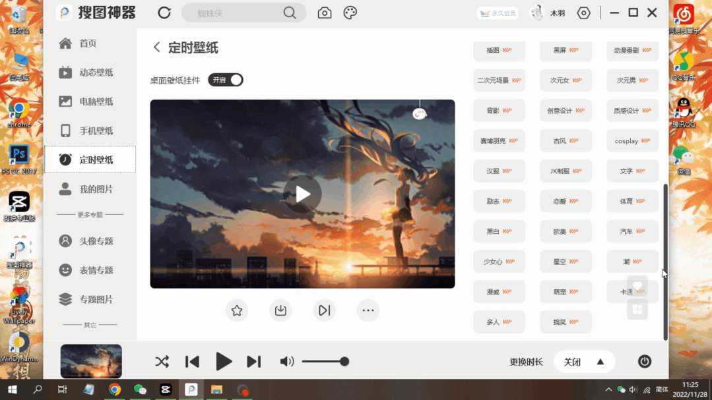
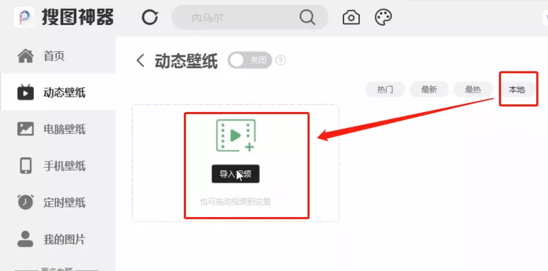
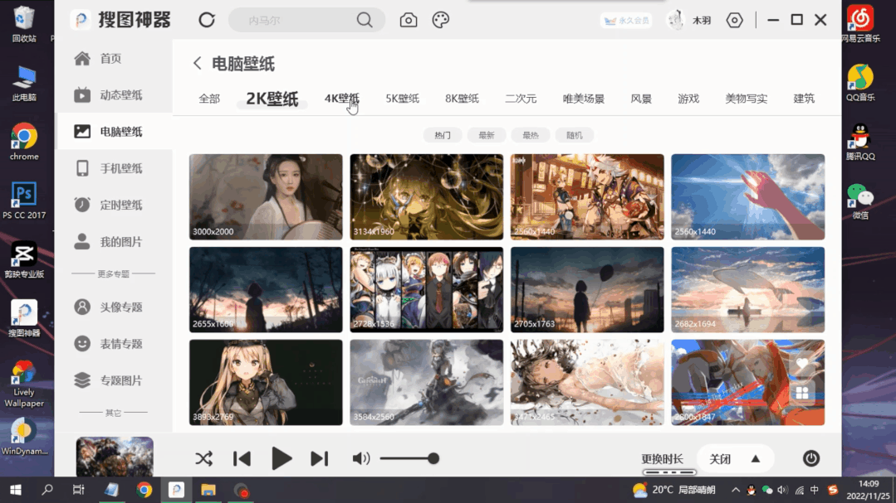
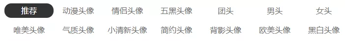
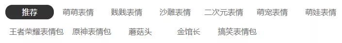

- 

搜图神器 2023-1-11 12:00
搜图神器最新pc版本
定时换壁纸功能上线！
http://qiniu.soutushenqi.com/soutushenqi_pc_0.11.0.0.exe
目前新购买APP会员也送PC端会员哦~
(反之也可以)
未来APP会员/PC会员将会分离
还未购买会员的赶紧购买吧！
现在一次购买，领取双端会员！
稳赚不亏~
新功能定时切换壁纸
图源可以选择网络随机
同时也有着超多随机的分类可选
即便是随机也能随机自己喜欢的类型！

添加至列表

列表/随机切换
也可以拉动可爱的桌面壁纸球来更换壁纸

有超多高清的动态壁纸可免费使用

找不到喜欢的也可以导入本地视频
静态电脑壁纸最高清晰度可达8k!
支持搜索，喜欢的壁纸不怕找不到！

当然搜图神器pc端不止于此！
还有非常多的其他功能！
现在就跟随小编一起来
体验一下搜图神器pc端新版本吧~
无论是高清壁纸、还是头像表情包
GIF、朋友圈背景、免抠图等等
搜索结果已分类好来呈现

而且还聚集了全网主流搜索资源数据
海量图库资源
为你在生活的工作中提升找图效率！

上传或粘贴图片链接
即可搜索图片原图、高清图、类似图！
一键得到常用的搜狗、必应、百度识图结果

还有专门的壁纸、汤欣识图！

简直就是小编找原图的神！
非常有特色壁纸列表功能!
可以将喜欢的动态、静态壁纸
都加入列表中，随时切换！


支持自动切换壁纸
自定义切换时间
定时切换壁纸图源有着超多分类可选
随机也只随机自己喜欢的!
想要超高清的高质量壁纸？
2K、4K、5K、8K…………
各类精选壁纸应有尽有！
想要更不同？
图库类型更加丰富！
二次元、文艺、风景、设计、古风等等…………
主题类目图片资源满足你的各类需求~

动态壁纸数据大更新！
更多更全更美更有趣！
一键下拉！滑到你喜欢为止！
如此美妙丝滑的体验！
德芙都要说：是我输了！
数据源全面更新，推荐壁纸质量更高！


海外站点专题合集
不用再去到处找图片！


头像分类
表情包分类
头像表情包展示

你想要的全都有！
全部均可免费使用！
各类实用工具，更加方便快捷
点开即可直接使用！

看到心仪的壁纸
可以直接一键设置成桌面壁纸！
一键切换心仪壁纸
可以一键复制图片到
例如QQ、PS、公众号平台等第三方软件里！
为你的工作生活增添不一样的色彩~
可在个性化设置中点击“显示壁纸球挂件”
直接拖动桌面顶部壁纸球
即可一键更换壁纸
天空蓝、柠檬黄、少女粉、清新绿、炫酷黑、高级白…………
个性化主题设置
让你的世界更加符合你的需求！
心动了吗？
这还只是其中部分功能哦！
更多功能等你发现！